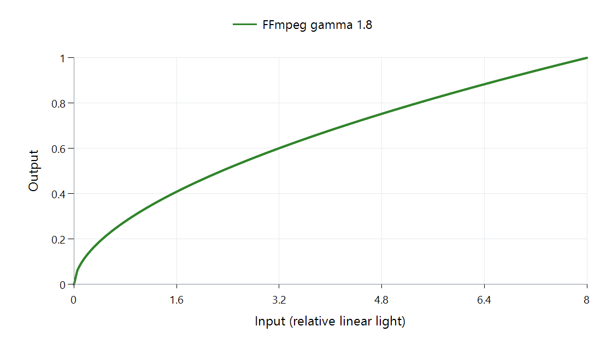

Tone Mapping Curve: Gamma
A power mapping can give lower values more output room than uniform scaling. In the plotted FFmpeg example, most of the curve uses T(x) = (x/8)^(1/1.8), fitting a source peak of eight into output white one.

FFmpeg 8.1 scalar CPU function, relative linear light for neutral gray. Its very dark region uses the implementation's linear extension.
| Input | Mapped output | Uniform division by eight |
|---|---|---|
| 1 | About 0.315 | 0.125 |
| 4 | About 0.680 | 0.500 |
| 8 | 1 | 1 |
The endpoint fits in both cases. The power function assigns more output to the lower and middle inputs, changing the contrast distribution.
Follow the darkest part separately
A bare power with exponent below one becomes very steep near zero. FFmpeg replaces the part below input 0.05 with a straight extension that meets the power value there:
T(x) = x × (0.05/8)^(1/1.8) / 0.05 for x up to 0.05.
Input 0.01 therefore produces about 0.01193, and 0.05 produces about 0.05963. The plotted function includes that treatment; using the power expression down to zero would describe a different shadow response.
Resolve the parameter's meaning before reproducing a result
libplacebo's mapper also uses the name gamma, but preserves an unchanged lower interval and chooses a power above its knee. Its knee parameter has a different role from FFmpeg's gamma parameter.
Neither is simply the display gamma. This function remaps a brightness range. Display gamma participates in a signal-to-light response. During an Emby comparison, locating that operation within the playback path keeps the mapping arithmetic separate from output interpretation.